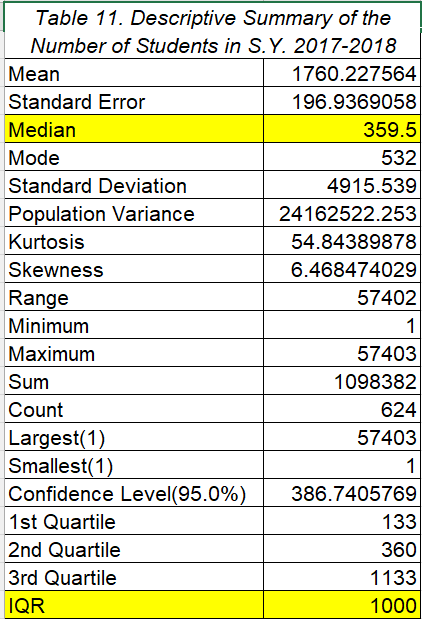
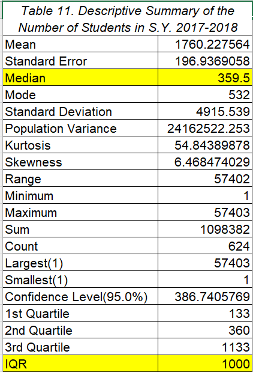

PARAMETERS
VARIABLE 1: REGION
Bar Graphs and Pie Charts


VARIABLE 2: TYPE OF SCHOOL (PUBLIC OR PRIVATE)
Bar Graphs and Pie Charts

VARIABLE 3: NUMBER OF STUDENTS
Histogram

Descriptive Summaries and Box and Whisker Plots
 



VARIABLE 4: NUMBER OF FACULTY
Histogram


Descriptive Summaries and Box and Whisker Plots


VARIABLE 5: RATIO OF FACULTY TO STUDENTS
Histogram


Descriptive Summaries and Box and Whisker Plots


CONCLUSION
Higher Education in Luzon in S.Y. 2016-2017, S.Y. 2017-2018, and S.Y. 2018-2019 by Jade Dalupe. All Rights Reserved. 2023